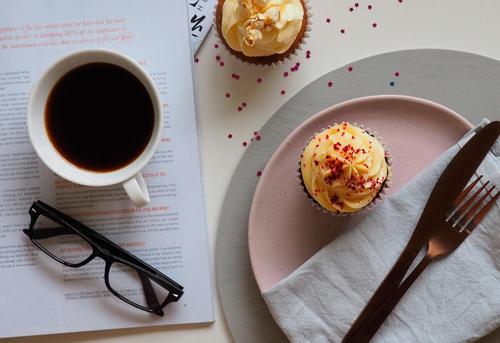

Como Moler café Escrito el: 15/02/2024 por: Admin Consejos para moler café de forma efectiva y hacer un buen cafe para disfrutar.
 Snacks para acompañar un buen Café Escrito el: 15/02/2024 por: Admin Consejos para tomar café acompañado de ricos snacks o aperitivos.
Como preparar un buen Café Escrito el: 15/02/2024 por: Admin Consejos para preparar un buen café y no morir en el intento